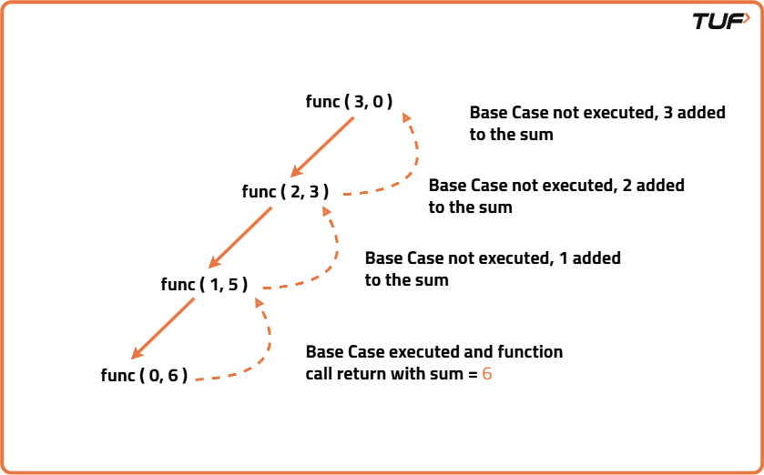
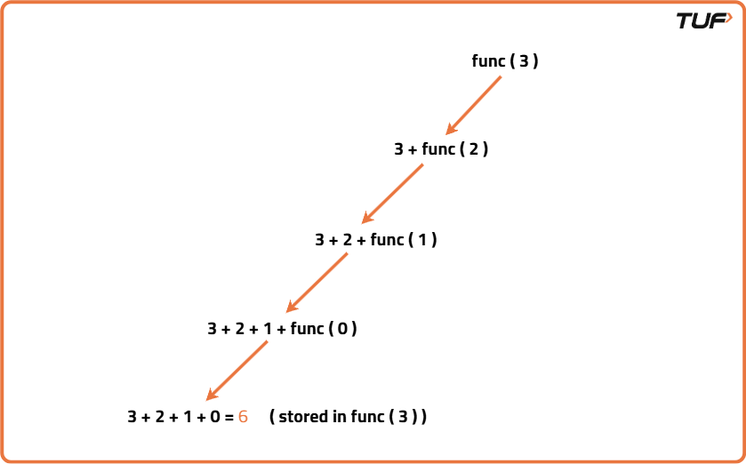

Sum of first N Natural Numbers
Problem Statement: Given a number ‘N’, find out the sum of the first N natural numbers .
Examples
Input: N=5 Output: 15 Explanation: 1+2+3+4+5=15
Input: N=6 Output: 21 Explanation: 1+2+3+4+5+6=15
Disclaimer: Don’t jump directly to the solution, try it out yourself first.
Brute Force Approach
Algorithm
- Initialize a variable to store the sum as 0.
- Start a loop from 1 and go up to the given number.
- In each iteration, add the current number to the sum.
- After the loop finishes, the sum variable will hold the result.
- Return or print the sum.
Code
#include <bits/stdc++.h>
using namespace std;
class Solution {
public:
// Function to find sum of first N natural numbers using loop
int sumOfNaturalNumbers(int N) {
// Initialize sum to 0
int sum = 0;
// Loop from 1 to N
for (int i = 1; i <= N; i++) {
// Add current number to sum
sum += i;
}
// Return the computed sum
return sum;
}
};
// Driver code
int main() {
// Create object of Solution class
Solution obj;
// Input value for N
int N;
cin >> N;
// Call the function and store the result
int result = obj.sumOfNaturalNumbers(N);
// Print the result
cout << result << endl;
return 0;
}
Complexity Analysis
Time Complexity: O(N),We iterate from 1 to N once, performing a constant-time addition operation in each iteration, resulting in linear time complexity.
Space Complexity: O(1),We only use a few variables to store the sum and loop counter, so the space usage remains constant regardless of N.
Using Formula
Algorithm
- Take a variable sum.
- Initialize it with N(N+1)/2, where N is a given number.
Code
#include <bits/stdc++.h>
using namespace std;
class Solution {
public:
// Function to find sum of first N natural numbers using formula
int sumOfNaturalNumbers(int N) {
// Apply formula directly
return (N * (N + 1)) / 2;
}
};
// Driver code
int main() {
Solution obj;
int N;
cin >> N;
cout << obj.sumOfNaturalNumbers(N) << endl;
return 0;
}
Complexity Analysis
Time Complexity: O(1)
Space Complexity: O(1)
Recursive Approach
Algorithm
sum(N) = N + sum(N-1), with the base case sum(1) = 1.
Recursive way of calculating the sum of first N Natural Numbers:
- Define a recursive function to calculate the sum of natural numbers.
- If the input is the smallest natural number, return it directly as the base case.
- Otherwise, add the current number to the result of calling the same function with the previous number.
- Repeat this process until the base case is reached.
- The results from each call combine to give the final sum.


Code
#include <bits/stdc++.h>
using namespace std;
class Solution {
public:
// Recursive function to find sum of first N natural numbers
int sumOfNaturalNumbers(int N) {
// Base case: if N is 1, return 1
if (N == 1) {
return 1;
}
// Recursive case: current number + sum of previous numbers
return N + sumOfNaturalNumbers(N - 1);
}
};
// Driver code
int main() {
Solution obj;
int N;
cin >> N;
cout << obj.sumOfNaturalNumbers(N) << endl;
return 0;
}
Complexity Analysis
Time Complexity: O(N),The function is called N times, with each call performing O(1) work.
Space Complexity: O(N),Due to recursive function calls being stored on the call stack, which grows linearly with N.